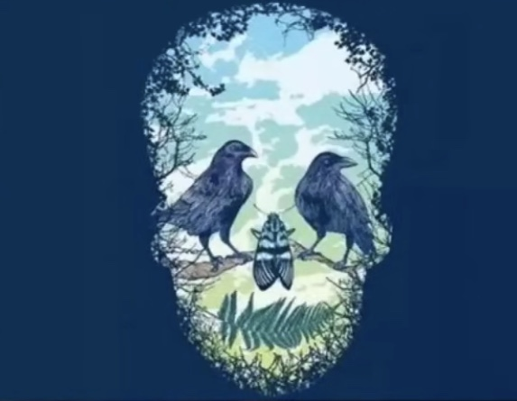

Explore your character
Hover over images for instant results.
___________
Question 1 - What you're most afraid of
Which picture did you see first?

You need independence, but you are often bound and obstructed by people who are stronger than you. Your heart will be often angry, worried and fearful. On the other hand, if you feel that you are not mature enough or competent enough, you will be very sad.

You have a lack of security in your heart and want stability. What you are most afraid of is the mistrust of others. Your self-awareness is strong, and views are often in a self-centered position.Therefore, you need to analyze yourself and reject bad cognitive habits.

The sense of presence is very sensitive to your insight. You feel that the real motivation of the mind is the sense of existence. Your heart is most afraid of losing your sense of being, so you are always eager to talk. What you say can be valuable.

You can easily solve the crisis you face and use humor to make your emotions easier. However, the sense of humor masks the true self, which shows that you don't want others to see it. You are a less serious person and it is difficult to have a serious dialogue.
___________
Question 2 - Meeting your spouse
What number will you choose?

Your future marriage partner will be your classmate or colleague. You will be happy studying or working together. The process of love is full of romantic taste, deeper understanding, and together you can find the most fundamental meaning of marriage.

You will meet your other half through a blind date or other people's introduction. You will have to get to know each other. In the process of getting along, you will have an open and sincere heart. There is shock as it seems that you have known each other for a long time.

The other half of your future will be someone you have helped. Maybe you have forgotten, but this person has always been obsessed with you. Your other half will appreciate your compassion and kindness. With a foundation of love, your marriage will be very harmonious.

You will meet your future partner at a party. You may have wished to attend people's weddings, or some friends' gatherings. You will find the special person in the crowd. Everything around you will have changed, and love blooms when your eyes meet.
___________
Question 3 - Quiet or wild heart
What did you see first?

Your character is simple and lovely. The heart is sunny and optimistic. You tease your loved ones, and the other party just feels your love. When you love, you are like a happy bird all day, but you are worried of having unreturned love.

You seem depressed to others. You rarely laugh, but your happiness is more obvious in love. You will call each other from time to time to ease your anxiety; often doubtful, worried that the other party will not empathize. In short, you will be insecure and lack confidence.

Your inner world is frank and sincere. You like to be with friends and to be busy. Being with you makes people feel relaxed and safe. You will never fight for fame and fortune. Even if you experience so many ups and downs, you are still so sincere and simple.

You always like things to progress according to your own ideas. In love, you ask your lover to show absolute loyalty to you. This will make the other party feel very stressed and will continue to grow. Once there is opposition, you will be annoyed. Let the other person and you drift away.
___________
Question 4 - Find out how organized you are
How do you use your toothpaste?

A.You're a person who has a strong need for organization and order. You can’t stand living and working without it. Your desk and your room will always be neat and tidy.
B. Your daily routine is always so busy. You many lack organization and rigor, but your problem solving skills are really strong because you can always get to the heart of the problem and solve it quickly and accurately.
C. Perseverance in your own goals is very strong. As long as you set a goal, despite difficulties you may encounter, you must complete it. Therefore, you rarely listen to other people's opinions or suggestions since you're headstrong. You have some self-centeredness and rarely objectively analyze the problem.
D. You rarely have fixed patterns of behavior, which is really hard to guess. Your inspiration always comes more quickly than others. You are full of optimism, open-minded and easy to accept new things, which enables you to keep pace with the times and integrate into a new environment very quickly.
___________
Question 5 - Anxiousness Test
What do you see first?

A. Two Birds: The birds in the sky have found a temporary shelter, which symbolizes that you have been busy for a long time in the past, causing you to be exhausted. However, you are able to relax every once and a while. You can stop working, listen to music, take a walk, and stop thinking about the past. Of course, if time permits, you can travel and discover new ideas that will help you broaden your horizons.
B. The Cicada: Your eyes exclude other distractions, and you find a cicada first, which reflects that your current thinking is very relaxed. You don’t feel any pressure, and you are in a very happy mood. This is a rare time when you can put aside small tasks and plan for the future in the big picture, which will help you to be more clear about your responsibility in the future.
C. Messy Tree: Your recent mood is a bit too impetuous. It reflects your lack of concentration; it is difficult to sink into the heart to do things. In order to remove this, it is necessary to cultivate a long-term interest, such as playing piano or calligraphy and the like. After a long period of training, it will gradually remove the arrogance, and things will become more calm.
D. The Skull: You have been a little nervous recently, which is caused by the external pressure you are facing. Due to your lack of experience in dealing with these things, you are at a loss and become distracted, which results in the pressure. You should understand that every time you face pressure is a test. Withstand the test to mature. So, change your way of thinking. Pressure is not bad. With positive thinking, you will find solutions.